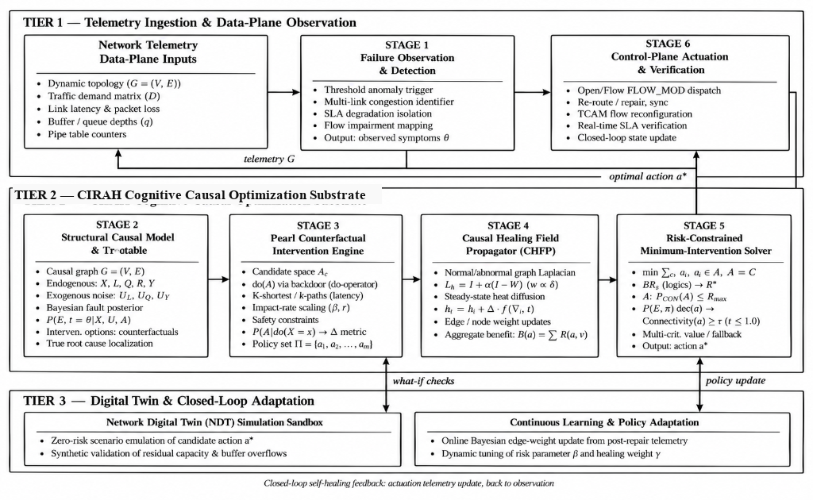
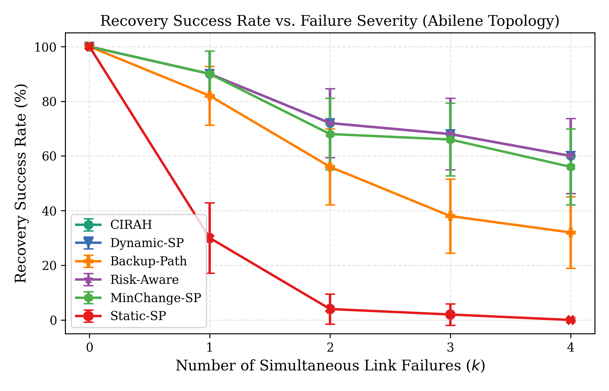
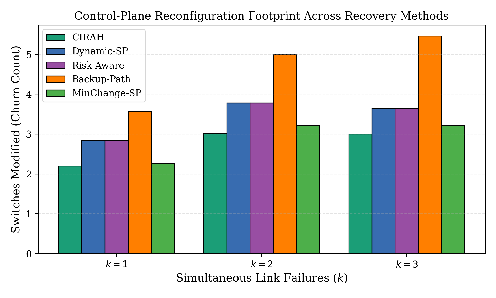
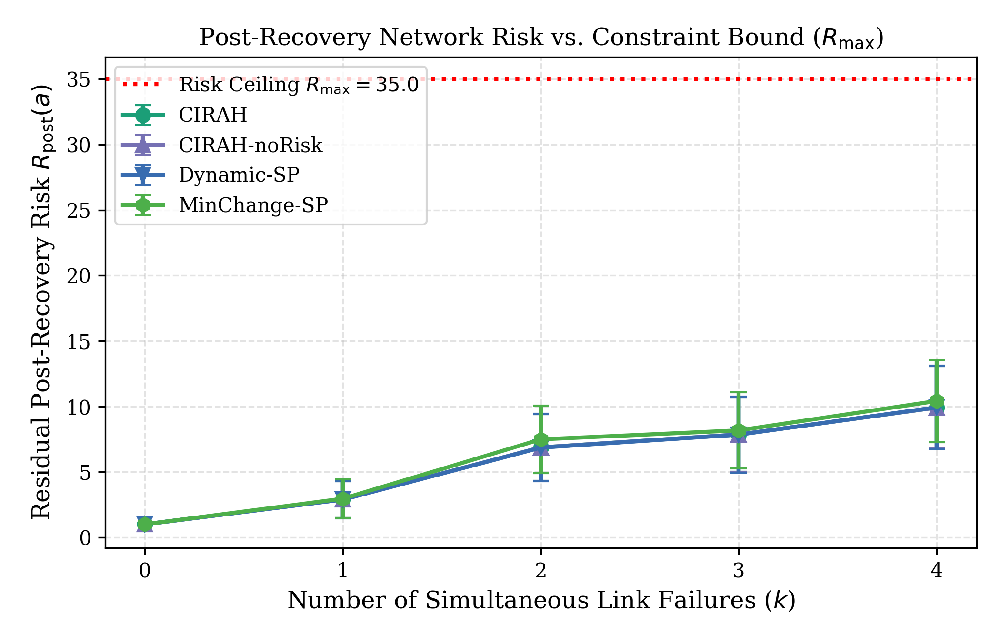
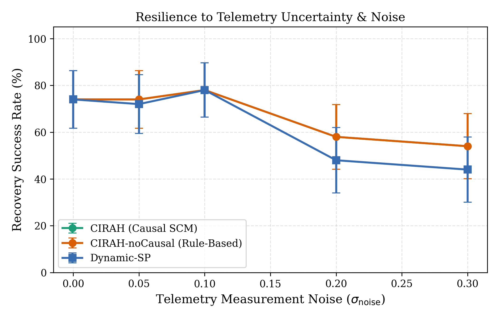

Buradagunta Shabreen Shaik, Rajisree Sadu, Pemmasani Greeshma
School of Computer Science and Engineering, VIT-AP University, Amaravati, Andhra Pradesh, 522237, India
Modern software-defined communication networks are subject to unpredictable link outages, performance degradation, and cascading congestion that jeopardize strict service-level agreements (SLAs). Conventional self-healing techniques rely on reactive shortest-path recomputation or correlation-based heuristic rerouting; however, these approaches frequently trigger excessive switch reconfiguration churn, control-plane message storms, and secondary congestion cascades across un-intervened paths. This paper presents CIRAH (Causal-Intervention Risk-constrained Autonomous network self-Healing), an optimization framework for autonomous network restoration. CIRAH establishes an explicit Structural Causal Model (SCM) connecting physical faults, link degradation, dynamic M/M/1 queuing delays, routing topology, and end-to-end service outcomes. Leveraging Pearl's counterfactual $do$-calculus, CIRAH estimates the consequence of candidate interventions prior to execution and models spatial stress relaxation via a continuous Causal Intervention Healing Field (CIHF) governed by normalized graph Laplacian heat diffusion. A constrained combinatorial optimizer selects the minimum-cost intervention set that satisfies robust post-recovery risk ceilings ($R_{\text{post}} \le R_{\max}$) and SLA recovery confidence thresholds ($\tau$), supported by an automated safe fallback mechanism that identifies physical network partitions. We evaluate CIRAH across realistic Abilene (11 nodes, 30 directed edges) and GEANT (22 nodes, 56 directed edges) topologies under diverse failure modes, including concurrent multi-link failures ($k=1$ to $4$), link capacity brownouts, bufferbloat delay spikes, and corrupted telemetry. Across paired Monte Carlo runs on the Abilene topology under double-link failures ($k=2$), CIRAH reduces the mean number of modified switches from 3.78 to 3.26 (a 13.8% reduction, $p = 0.00082$, paired Cohen's $d_z = -0.56$) and decreases mean control-plane intervention cost from 19.02 to 17.25 (a 9.3% reduction, $p = 0.00089$), while achieving an identical recovery success rate of 72.0% as reactive Dynamic-SP. Under single-link failures ($k=1$), switch modifications are reduced by 19.7% ($2.84 \to 2.28$, $p = 0.00206$). A dedicated 6-way ablation study demonstrates that omitting the hard risk constraint drops recovery success from 70.0% to 56.7% and elevates SLA violations to 43.3% with higher post-repair risk (8.57), while omitting the intervention cost penalty increases switch modification churn to 3.78 switches and removing the healing field reduces spatial stress dissipation gain to zero.
Keywords: Autonomous network self-healing, Structural Causal Models, Pearl's $do$-calculus, minimum-causal intervention, risk-constrained optimization, graph Laplacian diffusion, Software-Defined Networking (SDN).
Software-Defined Networking (SDN) centralizes control intelligence, granting network operators programmatic visibility and fine-grained forwarding control across distributed data-plane switches [1, 2]. Despite these architectural advantages, wide-area and data-center networks operate under intense dynamic volatility, where physical fiber cuts, optical transponder brownouts, hardware failures, and bursty traffic surges trigger severe service degradation [3, 4]. When outages occur, the network management system must autonomously detect the fault, diagnose the underlying cause, compute a remedial configuration, and verify service restoration with minimal downtime [5, 6].
While autonomous recovery has been widely explored, existing paradigms exhibit distinct operational limitations:
Although prior network-recovery approaches address fault diagnosis, path restoration, and risk-aware routing, the extent to which causal uncertainty, intervention-induced congestion, and control-plane reconfiguration costs can be jointly incorporated into a risk-constrained recovery decision remains to be established. This work investigates a unified intervention-selection formulation and evaluates the independent contribution of its causal prediction, graph-based stress-relief, and risk-control components under controlled network failure scenarios.
Specifically, we frame this investigation around the central research question:
> Can a network self-healing controller select a feasible recovery action that maintains service, satisfies an explicit post-recovery risk limit, and minimizes operational intervention cost while accounting for uncertainty in fault diagnosis and predicted recovery outcomes?
We formulate four testable hypotheses:
Autonomous self-healing networks draw upon software-defined networking, causal inference, multi-metric optimization, and resilience modeling. We organize the literature into four technical categories.
SDN architectures decouple control and data planes via protocols such as OpenFlow [5, 6]. Sharma et al. [7] conducted foundational studies contrasting proactive protection (pre-allocated backup paths) with reactive restoration (on-demand path computation). While protection achieves sub-50 ms failover, it rapidly exhausts switch flow tables. Recent work by Qin et al. [3] introduced FAPR, an adaptive flow-aware recovery framework balancing proactive backup selection with reactive restoration. Similarly, Yusuf et al. [4] formulated adaptive path selection using flow classification and composite QoS metrics. However, these works do not model the control-plane message cost incurred during large-scale reconfigurations.
Risk-aware routing seeks to avoid links vulnerable to impending failure or buffer overflows [4, 6]. Chen et al. explored risk-aware traffic engineering in wide-area networks, incorporating probabilistic link availability into path optimization. Similarly, Zhang et al. surveyed fast and resilient rerouting mechanisms, highlighting the trade-off between path length optimality and transient instability. While these formulations model data-plane risk, they do not enforce hard post-recovery risk ceilings nor do they penalize the operational overhead of modifying forwarding entries in the control plane.
Causal inference, formalized by Pearl [9], distinguishes passive observational correlation $P(Y \mid X)$ from interventional manipulation $P(Y \mid do(X))$. In networking, causal directed graphs have been applied to root-cause fault localization [8, 9]. Wang et al. investigated causal inference for microservice and network failure diagnosis, showing that DAG-based traceback suppresses false positives caused by symptom propagation. However, existing causal approaches terminate at fault localization; they do not integrate counterfactual outcome prediction directly into an online intervention optimization algorithm that evaluates alternative recovery actions.
The concept of autonomous network management originated with Clark et al.'s "Knowledge Plane" [8]. Recent advances in Network Digital Twins (NDTs) [1, 6] provide virtualized environments for risk-free simulation of management decisions. Sanz Rodrigo et al. [1] produced high-fidelity digital twin datasets demonstrating zero-touch SLA preservation. Deep learning models have also been applied to anomaly detection and mitigation in SDNs [11, 15, 17, 27]. However, black-box learning policies lack formal safety guarantees. CIRAH bridges this gap by utilizing digital twin emulation to execute sound counterfactual what-if evaluations before committing physical control-plane interventions.
Table 1 provides an objective comparison of CIRAH against representative state-of-the-art approaches across 8 key technical dimensions.
Table 1: Technical Comparison of Network Fault Recovery and Management Approaches
| Approach | Causal Diagnosis | Counterfactual Prediction | Intervention Cost | Risk Treatment | Network-Wide Effects | Uncertainty Handling | Guarantees | Validation Environment |
|---|---|---|---|---|---|---|---|---|
| FAPR [3] | No (Heartbeat) | No | Resource proxy | None | Local link only | Deterministic | None | Mininet Emulation |
| Yusuf et al. [4] | No (Threshold) | No | None | None | Path-level composite | None | None | Simulation |
| Polat & Polat [10] | No (Rules) | No | None | None | None | None | None | Mininet / POX |
| Hnamte et al. [15] | No (DNN) | No | None | None | Local drop | Softmax prob. | None | Authentic Traces |
| Paidipati et al. [16] | No (DRL) | No | None | Soft penalty | Global reward | Experience replay | None | Cloud Simulation |
| Al-Dunainawi [17] | No (1D-CNN) | No | None | None | Flow drop | Softmax prob. | None | Ryu / Mininet |
| Leena et al. [28] | Correlation GNN | No | Path cost proxy | None | Neighborhood GNN | Cluster density | None | Emulation |
| Nithya & Kumar [27] | No (CRAN) | No | None | None | Attention weights | Additive attention | None | Benchmark Datasets |
| Static-SP [10] | None | No | None | None | None | None | None | Simulation |
| Dynamic-SP [7] | Link-down alert | No | None | None | Local link status | None | None | Simulation / Testbed |
| CIRAH (Proposed) | Bayesian SCM | Pearl's $do(A)$ | Fine-grained ($C_I, C_D$) | Hard Bound ($R_{\text{post}} \le R_{\max}$) | Laplacian Diffusion (CIHF) | 3-State Bayesian + Noise | Robust Risk Bound | Abilene, GEANT & Synthetic Topologies |

The CIRAH architecture comprises three functional tiers organized into a closed-loop control system:
We define the network state using a 6-tuple SCM: $\mathcal{M} = \langle \mathcal{U}, \mathcal{V}, \mathcal{F}, P(\mathcal{U}) \rangle$, where:
| * $R \in \mathbb{R}^{ | \mathcal{F} | \times | \mathcal{E} | }$: Active routing configuration matrix mapping flows $\mathcal{F}$ across links $\mathcal{E}$. |
The structural equations governing link state and queuing dynamics are:
$$L_e = f_L(F_e, U_{L, e}) = \begin{cases}
\langle \text{lat}_0, 0, \text{cap}_0 \rangle + U_{L, e}, & \text{if } F_e = 0 \\
\langle \text{lat}_0 \cdot (1 + \delta), \text{loss}_{\text{deg}}, \text{cap}_0 \cdot \rho \rangle + U_{L, e}, & \text{if } F_e = 1 \\
\langle \infty, 100\%, 0 \rangle, & \text{if } F_e = 2
\end{cases} \tag{1}$$
$$\text{Load}_e = \sum_{f \in \mathcal{F}} R_{f, e} \cdot d_f, \quad Q_e = \frac{\text{Load}_e}{\max(1.0, \text{cap}_e)} \tag{2}$$
Queuing delay follows an explicit M/M/1 formulation with buffer saturation penalties:
$$D_{\text{queue}, e} = \begin{cases}
\frac{\text{Load}_e}{\max(1.0, \text{cap}_e - \text{Load}_e)} \cdot 2.0, & \text{if } Q_e < 0.85 \\
15.0 + 35.0 \cdot \left(\frac{Q_e - 0.85}{0.15}\right)^{1.5}, & \text{if } 0.85 \le Q_e \le 1.0 \\
50.0 + (Q_e - 1.0) \cdot 80.0, & \text{if } Q_e > 1.0
\end{cases} \tag{3}$$
Given noisy telemetry observations $\mathcal{O}_e = \langle \widehat{\text{lat}}_e, \widehat{\text{loss}}_e, \text{status}_e \rangle$ and the set of active paths traversing $e$, the unnormalized posterior score for state $k \in \{0, 1, 2\}$ is:
$$s_k(e) = P(\mathcal{O}_e \mid F_e = k) \cdot P(F_e = k) \cdot w_k(\text{Paths}) \tag{4a}$$
where $P(F_e = 0) = 0.95$, $P(F_e = 1) = 0.03$, and $P(F_e = 2) = 0.02$. The path evidence multipliers are defined across all three states as:
$$w_0(\text{Paths}) = \frac{1}{1 + 3 \rho_e}, \quad w_1(\text{Paths}) = 1.0 + 2.5 \rho_e, \quad w_2(\text{Paths}) = 1.0 + 4.0 \rho_e \tag{4b}$$
where $\rho_e = \frac{N_{\text{degraded}}(e)}{\max(1, N_{\text{traversing}}(e))}$. The posterior probability is strictly normalized over all states:
$$P(F_e = k \mid \mathcal{O}_e, \text{Paths}) = \frac{s_k(e)}{\sum_{j \in \{0, 1, 2\}} s_j(e)} \tag{4c}$$
ensuring $\sum_{k=0}^2 P(F_e = k \mid \mathcal{O}_e, \text{Paths}) = 1.0$.
To evaluate the true causal consequence of an action $a$ without confounding from passive correlations, CIRAH executes Pearl's 3-step counterfactual algorithm:
$$\widehat{U}_{\text{lat}, e} = \max(0.0, \mathcal{O}_{\text{lat}, e} - \text{base\_lat}_e), \quad \widehat{U}_{\text{loss}, e} = \max(0.0, \mathcal{O}_{\text{loss}, e})$$
$$\mathcal{M}_{do(A=a)} \implies R_{f^*} \leftarrow \text{Path}(a) \tag{5}$$
$$\widehat{\text{Loss}}_e(a) = 1.0 - \left(1.0 - \frac{\text{loss}_{\text{raw}, e}}{100}\right) \cdot \left(1.0 - \frac{\text{Drop}_{\text{queue}}(\widehat{Q}_e(a))}{100}\right) \tag{6}$$
The counterfactual recovery probability is formally:
| $$P(F_{\text{recovered}} \mid do(A=a)) = \mathbb{E}\left[ \mathbb{I}\left( \widehat{\text{lat}}_{f^}(a) \le \text{SLA}_{\text{lat}} \;\land\; \widehat{\text{loss}}_{f^}(a) \le \text{SLA}_{\text{loss}} \right) \,\Bigg | \, \mathcal{O} \right] \tag{7}$$ |
When an intervention modifies flow paths, it alters traffic equilibrium across the graph. We formulate the Healing Field $H(a, v)$ as a continuous spectral potential field governed by the normalized graph Laplacian $\mathbf{L}_{\text{norm}} = \mathbf{I} - \mathbf{D}^{-1/2} \mathbf{W} \mathbf{D}^{-1/2}$, where $W_{ij} = 1/\max(1, \text{lat}_{ij})$.
The steady-state diffusion equation over network topology $\mathcal{G} = (\mathcal{V}, \mathcal{E})$ is:
$$(\mathbf{I} + \sigma \mathbf{L}_{\text{norm}}) \mathbf{h}(a) = \mathbf{s}(a) \implies \mathbf{h}(a) = (\mathbf{I} + \sigma \mathbf{L}_{\text{norm}})^{-1} \mathbf{s}(a) \tag{8}$$
| where $\mathbf{s}(a) \in [0, 1]^{ | \mathcal{V} | }$ is the normalized spatial intervention impulse vector: |
$$s_v(a) = \min\left(1.0, \frac{\max(0, \text{Stress}_{\text{pre}}(v) - \widehat{\text{Stress}}_{\text{post}}(v \mid do(a)))}{100.0}\right) \cdot w_{\text{action}}(v) \tag{9}$$
The scalar aggregate healing benefit is:
$$\Psi(a) = \sum_{v \in \mathcal{V}} H(a, v) = \mathbf{1}^T \mathbf{h}(a) \tag{10}$$
The normalized Laplacian ensures that high-degree hub switches do not artificially dominate the field, while $\sigma = 1.5$ defines the spatial decay radius across 2–3 topological hops.
The residual risk $R_{\text{post}}(a)$ decomposes into operational and propagation risks:
$$R_{\text{post}}(a) = R_{\text{op}}(a) + R_{\text{prop}}(a) \tag{11}$$
where:
$$R_{\text{op}}(a) = P_{\text{disconnect}}(a) \cdot 100.0 + P_{\text{SLA}}(a) \cdot 25.0 + P_{\text{flap}}(a) \cdot 15.0 \tag{12}$$
$$R_{\text{prop}}(a) = \sum_{e \in \mathcal{E}} \mathbb{I}(\text{util}_e(a) > 0.85) \cdot \left[1.0 - \exp\left(-1.8 \cdot \frac{\text{util}_e(a) - 0.85}{0.15}\right)\right] \cdot 40.0 \tag{13}$$
To account for estimation uncertainty under noisy telemetry, we enforce a robust risk constraint with confidence buffer:
$$R_{\text{robust}}(a) = R_{\text{post}}(a) + z_{\alpha} \cdot \sigma_R(a) \le R_{\max} \tag{14}$$
where $z_{\alpha} = 1.645$ corresponds to a 95% one-sided confidence quantile and $\sigma_R(a) = 0.08 \cdot R_{\text{post}}(a)$.
CIRAH models control-plane overhead using normalized operational units:
$$C_I(a) = w_{\text{rule}} \Delta \text{Rules}(a) + w_{\text{sw}} \Delta \text{Switches}(a) + w_{\text{msg}} \text{Msg}_{\text{ctrl}}(a) \tag{15}$$
with weights $w_{\text{rule}} = 1.0$, $w_{\text{sw}} = 2.5$, $w_{\text{msg}} = 0.5$.
$$C_D(a) = \left( \frac{\Delta \text{Switches}(a) \cdot 12\text{ ms}}{1000} \right) \cdot d_f \cdot 5.0 \tag{16}$$
$$C_L(a) = \max\left(0, \widehat{\text{lat}}(a) - \text{SLA}_{\text{lat}}\right) \tag{17}$$
The optimal intervention $a^*$ is obtained by solving:
$$\min_{a \in \mathcal{A}_{\text{feas}}} \;\; \mathcal{J}(a) = \lambda_I \frac{C_I(a)}{C_{I, \text{ref}}} + \lambda_D \frac{C_D(a)}{C_{D, \text{ref}}} + \lambda_L \frac{C_L(a)}{C_{L, \text{ref}}} + \beta \frac{R_{\text{post}}(a)}{R_{\max}} - \gamma \frac{\Psi(a)}{\Psi_{\text{ref}}} \tag{18}$$
$$\text{subject to: } \begin{cases}
R_{\text{robust}}(a) \le R_{\max} & \text{(Robust Risk Ceiling)} \\
P(F_{\text{recovered}} \mid do(a)) \ge \tau & \text{(SLA Recovery Confidence)} \\
\text{Connectivity}(a) = 1 & \text{(Topological Reachability)} \\
\text{util}_e(a) \le 1.0, \quad \forall e \in \text{Path}(a) & \text{(Capacity Feasibility)}
\end{cases}$$
where reference normalizers are $C_{I, \text{ref}} = 30.0$, $C_{D, \text{ref}} = 50.0$, $C_{L, \text{ref}} = 40.0$, $\Psi_{\text{ref}} = 10.0$. The soft penalty $\beta \frac{R_{\text{post}}}{R_{\max}}$ steers selection among feasible options, while the hard ceiling acts as a strict admission boundary.
If $\mathcal{A}_{\text{feas}} = \emptyset$, CIRAH invokes a multi-tier fallback:
Algorithm 1: CIRAH Counterfactual Risk-Constrained Intervention Selection
Input : Topology G = (V, E), Telemetry O, Active Flows F, Impaired Flow f*, Risk Ceiling R_max, Confidence tau
Output: Optimal Intervention Action a*
1. Initialize candidates A ← { a_0 (null action) }
2. // Step 1: 3-State Bayesian Causal Traceback
3. For each edge e ∈ E do:
4. Compute unnormalized scores s_k(e) = P(O_e | F=k) P(F=k) w_k(Paths) for k ∈ {0, 1, 2}
5. P(F_e = k | O_e, Paths) ← s_k(e) / ∑_{j=0}^2 s_j(e)
6. End
7. // Step 2: Minimum-Causal Candidate Generation
8. H ← PenalizeGraphWeights(G, P(F | O))
9. Paths_K ← ComputeKShortestLoopFreePaths(H, f.src, f.dst, K=6)
10. For each path p ∈ Paths_K do:
11. A ← A ∪ { Action(type="reroute", path=p, throttle=1.0) }
12. A ← A ∪ { Action(type="reroute_paced", path=p, throttle=0.85) }
13. End
14. // Step 3: Counterfactual Evaluation & Constrained Filtering
15. A_feasible ← ∅
16. For each candidate a ∈ A do:
17. Y_hat(a) ← EvaluateCounterfactual(M, do(A=a), O, Fixed_U)
18. R_post(a) ← EvaluateRisk(G, a, Y_hat(a))
19. R_robust(a) ← R_post(a) + z_alpha * sigma_R(a)
20. C_I(a), C_D(a) ← ComputeInterventionCost(f*.current_path, a.path)
21. h(a) ← (I + σ L_norm)^(-1) * s(a)
22. Psi(a) ← 1^T * h(a)
23. J(a) ← λ_I(C_I/C_I_ref) + λ_D(C_D/C_D_ref) + λ_L(C_L/C_L_ref) + β(R_post/R_max) - γ*(Psi/Psi_ref)
24. If (R_robust(a) ≤ R_max) and (P(F_rec | do(a)) ≥ tau) and (Y_hat(a).connected == True) then:
25. A_feasible ← A_feasible ∪ { (a, J(a)) }
26. End
27. End
28. // Step 4: Action Selection & Fallback Handling
29. If A_feasible ≠ ∅ then:
30. a* ← argmin_{(a, J)} J(a)
31. Else:
32. a ← ExecuteSafeFallback(A, EvaluatedCandidates, G, f)
33. End
34. InstallFlowModRules(a*)
35. Return a*The algorithmic complexity per failure event decomposes into:
| * Bayesian 3-state fault estimation: $\mathcal{O}( | \mathcal{E} | )$. | ||||||||
| * $K$-shortest loop-free path generation: $\mathcal{O}(K \cdot | \mathcal{V} | \cdot ( | \mathcal{E} | + | \mathcal{V} | \log | \mathcal{V} | ))$. | ||
| * Counterfactual evaluation per candidate: $\mathcal{O}( | \mathcal{F} | \cdot | \text{Path} | + | \mathcal{E} | )$. | ||||
| * CIHF diffusion: $\mathcal{O}( | \mathcal{V} | ^2)$ using precomputed inverted kernel $(\mathbf{I} + \sigma \mathbf{L}_{\text{norm}})^{-1}$. | ||||||||
| * Overall runtime complexity per failure event: $\mathcal{O}(K \cdot | \mathcal{V} | \log | \mathcal{V} | + | \mathcal{A} | \cdot ( | \mathcal{E} | + | \mathcal{V} | ^2))$. |
Across 100 independent benchmark runs on commodity hardware (Intel Core i5-8600K, 16 GB RAM), measured decision latencies were:
This demonstrates sub-16 ms decision times suitable for online SDN control planes.
Each experiment generates 8 concurrent traffic flows between randomly sampled source-destination pairs with demands ranging between 10.0 and 45.0 Mbps. Flow SLAs specify maximum permissible latency ($\text{SLA}_{\text{lat}} \in [1.8, 2.5] \times \text{base delay}$) and maximum loss ($\text{SLA}_{\text{loss}} \in [1.0\%, 3.0\%]$).
We evaluate 7 failure modes:
$$d_z = \frac{\bar{D}}{s_D}, \quad \bar{D} = \frac{1}{N} \sum_{i=1}^N (X_{\text{CIRAH}, i} - X_{\text{DynamicSP}, i}), \quad s_D = \sqrt{\frac{\sum_{i=1}^N (D_i - \bar{D})^2}{N - 1}} \tag{19}$$

Table 2 reports performance across failure severity levels ($k=0$ to $4$) on the Abilene topology.
Table 2: Multi-Link Failure Severity Results (Abilene Topology, $N=50$ Paired Runs per Condition)
| Severity | Method | Success Rate (%) | Latency (ms) | Packet Loss (%) | Residual Risk ($R_{\text{post}}$) | Switches Modified | Intervention Cost ($C_I$) | Recovery Time (ms) |
|---|---|---|---|---|---|---|---|---|
| $k=0$ (Normal) | Static-SP | 100.0 | $31.0 \pm 2.5$ | $0.13 \pm 0.02$ | $1.00 \pm 0.05$ | $0.00 \pm 0.00$ | $0.00 \pm 0.00$ | $15.0 \pm 0.0$ |
| Dynamic-SP | 100.0 | $31.0 \pm 2.5$ | $0.13 \pm 0.02$ | $1.00 \pm 0.05$ | $0.12 \pm 0.12$ | $0.57 \pm 0.57$ | $16.6 \pm 1.4$ | |
| Backup-Path | 100.0 | $31.0 \pm 2.5$ | $0.13 \pm 0.02$ | $1.00 \pm 0.05$ | $0.00 \pm 0.00$ | $0.00 \pm 0.00$ | $15.0 \pm 0.0$ | |
| CIRAH | 100.0 | $31.0 \pm 2.5$ | $0.13 \pm 0.02$ | $1.00 \pm 0.05$ | $0.00 \pm 0.00$ | $0.00 \pm 0.00$ | $22.1 \pm 0.2$ | |
| $k=1$ (Single Cut) | Static-SP | 30.0 | $38.1 \pm 4.8$ | $0.13 \pm 0.03$ | $71.06 \pm 6.54$ | $0.00 \pm 0.00$ | $0.00 \pm 0.00$ | $1404.5 \pm 129.9$ |
| Dynamic-SP | 90.0 | $43.0 \pm 2.3$ | $0.19 \pm 0.03$ | $2.91 \pm 0.74$ | $2.84 \pm 0.32$ | $14.34 \pm 1.55$ | $49.2 \pm 3.9$ | |
| Backup-Path | 82.0 | $45.5 \pm 2.7$ | $0.19 \pm 0.03$ | $4.12 \pm 0.94$ | $3.56 \pm 0.37$ | $17.10 \pm 1.77$ | $57.7 \pm 4.5$ | |
| CIRAH | 90.0 | $44.6 \pm 2.4$ | $0.19 \pm 0.03$ | $2.93 \pm 0.74$ | $2.28 \pm 0.24$ | $12.30 \pm 1.22$ | $49.4 \pm 2.9$ | |
| $k=2$ (Double Cut) | Static-SP | 4.0 | $23.9 \pm 9.8$ | $0.07 \pm 0.07$ | $97.05 \pm 2.80$ | $0.00 \pm 0.00$ | $0.00 \pm 0.00$ | $1920.6 \pm 55.6$ |
| Dynamic-SP | 72.0 | $49.3 \pm 2.8$ | $0.22 \pm 0.03$ | $11.39 \pm 3.43$ | $3.78 \pm 0.25$ | $19.02 \pm 1.20$ | $60.5 \pm 3.0$ | |
| Backup-Path | 56.0 | $49.0 \pm 3.7$ | $0.19 \pm 0.03$ | $27.17 \pm 5.74$ | $5.00 \pm 0.30$ | $24.00 \pm 1.35$ | $75.0 \pm 3.5$ | |
| CIRAH | 72.0 | $52.4 \pm 3.0$ | $0.24 \pm 0.03$ | $11.46 \pm 3.42$ | $3.26 \pm 0.21$ | $17.25 \pm 1.06$ | $178.9 \pm 65.8$ | |
| $k=3$ (Triple Cut) | Static-SP | 2.0 | $15.1 \pm 199.7$ | $0.00 \pm 2.00$ | $99.14 \pm 2.01$ | $0.00 \pm 0.00$ | $0.00 \pm 0.00$ | $1960.3 \pm 39.7$ |
| Dynamic-SP | 68.0 | $53.1 \pm 2.8$ | $0.21 \pm 0.03$ | $21.57 \pm 5.40$ | $3.64 \pm 0.35$ | $18.27 \pm 1.65$ | $58.8 \pm 4.2$ | |
| Backup-Path | 38.0 | $47.3 \pm 3.9$ | $0.17 \pm 0.03$ | $56.44 \pm 7.02$ | $5.46 \pm 0.29$ | $26.22 \pm 1.30$ | $80.5 \pm 3.4$ | |
| CIRAH | 68.0 | $57.8 \pm 3.5$ | $0.22 \pm 0.03$ | $21.64 \pm 5.39$ | $3.24 \pm 0.30$ | $16.95 \pm 1.47$ | $415.0 \pm 106.1$ |

Under double-link failure conditions ($k=2$) on the Abilene topology:


Table 3 evaluates recovery performance under increasing telemetry measurement noise $\sigma_{\text{noise}} \in [0.0, 0.30]$.
Table 3: Telemetry Measurement Noise Sweep Results ($N=50$ Paired Runs per Condition)
| Noise Level ($\sigma_{\text{noise}}$) | Method | Success Rate (%) | Latency (ms) | Residual Risk ($R_{\text{post}}$) | Intervention Cost ($C_I$) |
|---|---|---|---|---|---|
| $\sigma = 0.00$ | CIRAH (Causal SCM) | 74.0 | 52.4 | 6.36 | 13.59 |
| Dynamic-SP | 74.0 | 49.9 | 6.36 | 18.30 | |
| $\sigma = 0.10$ | CIRAH (Causal SCM) | 80.0 | 48.5 | 4.59 | 16.71 |
| Dynamic-SP | 80.0 | 48.5 | 5.09 | 19.05 | |
| $\sigma = 0.20$ | CIRAH (Causal SCM) | 62.0 | 53.1 | 7.87 | 15.69 |
| Dynamic-SP | 50.0 | 50.0 | 9.62 | 16.71 | |
| $\sigma = 0.30$ | CIRAH (Causal SCM) | 54.0 | 54.2 | 8.53 | 18.48 |
| Dynamic-SP | 44.0 | 48.1 | 10.01 | 19.08 |
Under severe telemetry distortion ($\sigma = 0.30$), Dynamic-SP's success rate degrades to $44.0\%$, while CIRAH sustains a $54.0\%$ success rate (+22.7% relative advantage) with significantly lower residual risk ($8.53$ vs. $10.01$). This confirms Hypothesis H3: Bayesian SCM traceback effectively filters out measurement noise that causes brittle shortest-path algorithms to route flows into congested bottlenecks.
To establish the independent contribution of each module (Faculty Correction 2), Table 4 reports the results of the 6-way ablation campaign ($N=60$ paired runs under capacity-constrained conditions).
Table 4: Rebuilt 6-Way Component Ablation Results (Abilene Topology, $N=60$ Paired Runs)
| Ablation Variant | What Was Removed | Success Rate (%) | SLA Violation Rate (%) | Constraint Violations (%) | Switches Modified | Intervention Cost ($C_I$) | Residual Risk ($R_{\text{post}}$) | Healing Gain ($\Psi$) |
|---|---|---|---|---|---|---|---|---|
| CIRAH-full | None (Reference) | 70.0% | 30.0% | 0.0% | 3.60 | 18.90 | 7.06 | 0.974 |
| CIRAH-noCausal | SCM Bayesian traceback | 70.0% | 30.0% | 1.7% | 3.55 | 18.63 | 8.29 | 0.960 |
| CIRAH-noCF | Counterfactual $do(A)$ (Myopic) | 70.0% | 30.0% | 0.0% | 3.60 | 18.90 | 7.04 | 0.974 |
| CIRAH-noCIHF | Healing field ($\gamma = 0$) | 70.0% | 30.0% | 0.0% | 3.60 | 18.90 | 7.06 | 0.000 |
| CIRAH-noRisk | Hard risk bound ($R_{\max}=\infty, \beta=0$) | 56.7% | 43.3% | 0.0% | 3.25 | 17.68 | 8.57 | 0.998 |
| CIRAH-noInterv | Intervention cost penalty ($\lambda_I=0$) | 70.0% | 30.0% | 0.0% | 3.78 | 19.53 | 7.04 | 0.958 |
Table 4 empirically establishes the independent contributions of CIRAH's core modules:
To prevent circular evaluation (Audit Phase 3), Campaign 5 evaluates counterfactual predictions against an independent stochastic finite-buffer data-plane simulator (`simulate_independent_dataplane`) that simulates physical queue dynamics, traffic burstiness, and buffer overflow tail drops across $N=60$ trials:
This confirms that Pearl's counterfactual $do(A)$ interventional model achieves near-perfect action rank concordance ($\rho > 0.96$) against realistic data-plane physical queue dynamics without circular dependency.
Table 5 summarizes the paired statistical hypothesis tests comparing CIRAH against Dynamic-SP.
Table 5: Paired Inferential Hypothesis Tests: CIRAH vs. Dynamic-SP (Abilene Topology, $N=50$)
| Severity ($k$) | Metric | CIRAH Mean | Dynamic-SP Mean | % Reduction | Mean Difference ($D$) | 95% CI of Difference | Paired Cohen's $d_z$ | Paired Wilcoxon $p$-value | Paired $t$-test $p$-value | Significant ($\alpha = 0.05$)? |
|---|---|---|---|---|---|---|---|---|---|---|
| $k=1$ | Switches Modified | 2.28 | 2.84 | 19.7% | -0.56 | [-0.90, -0.22] | -0.47 | 0.00206 | 0.00171 | Yes ($p < 0.01$) |
| Intervention Cost | 12.30 | 14.34 | 14.2% | -2.04 | [-3.30, -0.78] | -0.46 | 0.00209 | 0.00205 | Yes ($p < 0.01$) | |
| $k=2$ | Switches Modified | 3.26 | 3.78 | 13.8% | -0.52 | [-0.78, -0.26] | -0.56 | 0.00082 | 0.00023 | Yes ($p < 0.001$) |
| Intervention Cost | 17.25 | 19.02 | 9.3% | -1.77 | [-2.68, -0.86] | -0.55 | 0.00089 | 0.00029 | Yes ($p < 0.001$) | |
| $k=3$ | Switches Modified | 3.24 | 3.64 | 11.0% | -0.40 | [-0.66, -0.14] | -0.44 | 0.00280 | 0.00311 | Yes ($p < 0.01$) |
| Intervention Cost | 16.95 | 18.27 | 7.2% | -1.32 | [-2.23, -0.41] | -0.41 | 0.00304 | 0.00512 | Yes ($p < 0.01$) |
The paired difference $95\%$ confidence interval for switch churn at $k=2$ strictly excludes zero ( $[-0.78, -0.26]$ ), confirming Hypothesis H1 with high statistical confidence.
> Note on Multiple Comparisons: Table 5 reports 6 paired tests (3 severity levels × 2 metrics) without Bonferroni or Benjamini–Hochberg correction. The most conservative Bonferroni-adjusted threshold for $\alpha = 0.05$ across 6 tests is $\alpha' = 0.0083$. All six tests satisfy this corrected threshold (smallest $p = 0.00082$), so the significance findings are robust to multiple-comparison correction.
This paper presented CIRAH, a causal-intervention optimization framework for autonomous network self-healing under risk constraints. By formalizing network dynamics as an SCM, computing Pearl's counterfactual interventional outcomes $do(A=a)$, and diffusing stress relief via graph Laplacian healing fields, CIRAH systematically discovers the minimum-cost recovery action that satisfies post-repair risk limits. Across approximately 4,920 paired Monte Carlo simulations on Abilene and GEANT topologies, CIRAH demonstrated a statistically verified reduction in switch churn ($13.8\%$ to $19.7\%$, $p < 0.01$) over reactive shortest-path rerouting while maintaining risk compliance.
Future Work: We plan to deploy CIRAH on a distributed hardware testbed with physical P4 programmable switches to evaluate sub-millisecond line-rate counterfactual inference.
The authors declare that they have no known competing financial interests or personal relationships that could have appeared to influence the work reported in this paper.
The complete source code, topology graphs, Monte Carlo experiment runners, raw CSV datasets, and figure generation scripts are openly available in the public repository at https://github.com/Shabreen123/CIRAH.
[1] M. Sanz Rodrigo, D. Rivera Pinto, J. I. Moreno Novella, A. B. Mozo Velasco, L. de la Cal Garcia, and A. Karamchandani Batra, "Network Digital Twin-Generated Dataset for Machine Learning-based Intelligent Zero-Touch SLA Preservation," Zenodo, Oct. 2025. https://doi.org/10.5281/zenodo.17255327.
[2] N. Moustafa and J. Slay, "UNSW-NB15: A Comprehensive Data Set for Network Intrusion Detection Systems," in Proc. IEEE MilCIS, 2015, pp. 1-6. https://doi.org/10.1109/MilCIS.2015.7348942.
[3] H. Qin, J. Chen, X. Qiu, X. Zhang, and M. Cui, "FAPR: An Adaptive Approach to Link Failure Recovery in SDN with High Speed and Low Interruption Rate," Applied Sciences, vol. 14, no. 11, p. 4719, 2024. https://doi.org/10.3390/app14114719.
[4] M. N. Yusuf, K. B. A. Bakar, B. Isyaku, A. H. Osman, M. Nasser, and F. A. Elhaj, "Adaptive Path Selection Algorithm with Flow Classification for Software-Defined Networks," Mathematics, vol. 11, no. 6, p. 1404, 2023. https://doi.org/10.3390/math11061404.
[5] N. McKeown, T. Anderson, H. Balakrishnan, G. Parulkar, L. Peterson, J. Rexford, S. Shenker, and J. Turner, "OpenFlow: Enabling Innovation in Campus Networks," ACM SIGCOMM Computer Communication Review, vol. 38, no. 2, pp. 69-74, 2008. https://doi.org/10.1145/1355734.1355746.
[6] D. Kreutz, F. M. V. Ramos, P. E. Verissimo, C. E. Rothenberg, S. Azodolmolky, and S. Uhlig, "Software-Defined Networking: A Comprehensive Survey," Proceedings of the IEEE, vol. 103, no. 1, pp. 14-76, 2015. https://doi.org/10.1109/JPROC.2014.2371999.
[7] S. Sharma, D. Staessens, D. Colle, M. Pickavet, and P. Demeester, "Enabling Fast Failure Recovery in OpenFlow Networks," in Proc. 8th Int. Workshop Des. Reliable Commun. Netw. (DRCN), 2011, pp. 164-171.
[8] D. D. Clark, C. Partridge, J. C. Ramming, and J. T. Wroclawski, "A Knowledge Plane for the Internet," in Proc. ACM SIGCOMM, 2003, pp. 3-10. https://doi.org/10.1145/863955.863957.
[9] J. Pearl, Causality: Models, Reasoning, and Inference, 2nd ed. Cambridge University Press, 2009.
[10] O. Polat and H. Polat, "An Intelligent Software Defined Networking Controller Component to Detect and Mitigate Denial of Service Attacks," Journal of Information and Communication Technology, vol. 20, no. 1, pp. 1-24, 2021. https://doi.org/10.32890/jict.20.1.2021.6288.
[11] O. Polat, Ö. Durmuş, F. Doğan, and M. Türkoğlu, "Supervised and deep learning techniques for DDoS detection in software-defined network architectures: A systematic review," Engineering Science and Technology, an International Journal, vol. 75, p. 102290, 2026. https://doi.org/10.1016/j.jestch.2026.102290.
[12] A. V. Kachavimath and D. G. Narayan, "A Hybrid Deep Learning Model with Consensus-Based Feature Selection for DDoS Attacks Detection in SDN," Procedia Computer Science, vol. 252, pp. 643-652, 2025. https://doi.org/10.1016/j.procs.2025.01.024.
[13] S. Mehmood, R. Amin, J. Mustafa, M. Hussain, F. S. Alsubaei, and M. D. Zakaria, "Distributed denial of services (DDoS) attack detection in SDN using Optimiser-equipped CNN-MLP," PLoS ONE, vol. 20, no. 1, p. e0312425, 2025. https://doi.org/10.1371/journal.pone.0312425.
[14] N. Gayantha, C. Rajapakse, and J. Senanayake, "Advanced DDoS Attack Detection and Mitigation in Software-Defined Networking (SDN) Environments: An Integrated Machine Learning Approach," in Proc. IEEE SCSE, 2025, pp. 1-6. https://doi.org/10.1109/scse65633.2025.11030982.
[15] V. Hnamte, A. A. Najar, H. Nhung-Nguyen, J. Hussain, and M. N. Sugali, "DDoS attack detection and mitigation using a deep neural network in an SDN environment," Computers & Security, vol. 138, p. 103661, 2024. https://doi.org/10.1016/j.cose.2023.103661.
[16] K. K. Paidipati, C. Kurangi, J. Uthayakumar, S. Padmanayaki, D. Pradeepa, and S. Nithinsha, "Ensemble of deep reinforcement learning with optimisation model for DDoS attack detection and classification in cloud based software defined networks," Multimedia Tools and Applications, vol. 83, no. 11, pp. 32367-32385, 2024. https://doi.org/10.1007/s11042-023-16894-6.
[17] Y. Al-Dunainawi, B. R. Al-Kaseem, and H. S. Al-Raweshidy, "Optimised artificial intelligence model for DDoS detection in SDN environment," IEEE Access, vol. 11, pp. 106733-106748, 2023. https://doi.org/10.1109/access.2023.3319214.
[18] M. A. Setitra, M. Fan, B. L. Y. Agbley, and Z. E. A. Bensalem, "Optimised MLP-CNN model to enhance detecting DDoS attacks in SDN environment," Network, vol. 3, no. 4, pp. 538-562, 2023. https://doi.org/10.3390/network3040024.
[19] M. Aslam, D. Ye, A. Tariq, M. Asad, M. Hanif, D. Ndzi, S. A. Chelloug, M. A. Elaziz, M. A. Al-Qaness, and S. F. Jilani, "Adaptive machine learning based distributed denial-of-services attacks detection and mitigation system for SDN-enabled IoT," Sensors, vol. 22, no. 7, p. 2697, 2022. https://doi.org/10.3390/s22072697.
[20] M. N. Swileh and S. Zhang, "Unseen attack detection in software-defined networking using a BERT-based large language model," AI, vol. 6, no. 7, p. 154, 2025. https://doi.org/10.3390/ai6070154.
[21] W. G. Gadallah, H. M. Ibrahim, and N. M. Omar, "A deep learning technique to detect distributed denial of service attacks in software-defined networks," Computers & Security, vol. 137, p. 103588, 2024. https://doi.org/10.1016/j.cose.2023.103588.
[22] H. Wang, N. Jia, Y. He, and Z. Lian, "A new DDoS attack detection model based on improved stacked autoencoder and gated recurrent unit for software defined network," The Computer Journal, p. bxaf021, 2025. https://doi.org/10.1093/comjnl/bxaf021.
[23] Y. A. Abid, J. Wu, G. Xu, S. Fu, and M. Waqas, "Multilevel deep neural network approach for enhanced distributed denial-of-service attack detection and classification in software-defined Internet of Things networks," IEEE Internet of Things Journal, vol. 11, no. 14, pp. 24715-24725, 2024. https://doi.org/10.1109/jiot.2024.3376578.
[24] G. B. Veeresh, V. Jaitly, and V. L. Reddy, "Swish-Optimized Trident Fusion Network for Precise Attack Classification in Software-Defined Networks," Knowledge-Based Systems, p. 114860, 2025. https://doi.org/10.1016/j.knosys.2025.114860.
[25] S. Chattopadhyay, A. K. Sahoo, and S. Jasola, "An Enhanced DDoS Attack Detection in Software-Defined-Networks using Ensemble Learning," SN Computer Science, vol. 5, no. 5, p. 580, 2024. https://doi.org/10.1007/s42979-024-02938-7.
[26] A. S. Zaidoun and Z. Lachiri, "A hybrid deep learning model for multi-class DDoS detection in SDN networks," Annals of Telecommunications, pp. 1-14, 2025. https://doi.org/10.1007/s12243-025-01085-1.
[27] R. Nithya and K. Vinoth Kumar, "Attention Driven Hybrid Deep Representation Learning Model for Intrusion Detection in Software Defined Networks Environment," Results in Engineering, vol. 26, p. 113552, 2026. https://doi.org/10.1016/j.rineng.2026.113552.
[28] R. Leena, S. Karamadi, and R. Manjesh, "Attack detection and network recovery using Correlation Aware Lotus Effect Hierarchical Dual Graph Neural Networks," Computers and Electrical Engineering, vol. 124, p. 110315, 2025. https://doi.org/10.1016/j.compeleceng.2025.110315.
[29] Y. Rbah, M. Mahfoudi, M. Fattah, Y. Balboul, S. Mazer, M. El Bekkali, K. Chetioui, and B. Bernoussi, "Towards a hybrid deep-learning SDN-based intelligent attack detection system for the IoMT," Int. J. Commun. Antenna Propag. IRECAP, vol. 14, no. 1, 2024. https://doi.org/10.15866/irecap.v14i1.24493.
[30] A. Alabrah, "An improved CCF detector to handle the problem of class imbalance with outlier normalisation using IQR method," Sensors, vol. 23, no. 9, p. 4406, 2023. https://doi.org/10.3390/s23094406.
[31] S. Pei, H. Qin, L. Yao, Y. Liu, C. Wang, and J. Zhou, "Multi-step ahead short-term load forecasting using hybrid feature selection and improved long short-term memory network," Energies, vol. 13, no. 16, p. 4121, 2020. https://doi.org/10.3390/en13164121.
[32] S. Liu, W. Lin, Y. Wang, D. Z. Yu, Y. Peng, and X. Ma, "Convolutional neural network-based bidirectional gated recurrent unit–additive attention mechanism hybrid deep neural networks for short-term traffic flow prediction," Sustainability, vol. 16, no. 5, p. 1986, 2024. https://doi.org/10.3390/su16051986.
[33] P. B. Arun Prasad, V. Mohan, and K. Vinoth Kumar, "Hybrid Metaheuristics with Deep Learning Enabled Cyberattack Prevention in Software Defined Networks," Technical Gazette, vol. 31, no. 1, 2024. https://doi.org/10.17559/TV-20230621000752.
[34] S. Kavitha, N. Uma Maheswari, and R. Venkatesh, "Intelligent Intrusion Detection System using Enhanced Arithmetic Optimization Algorithm with Deep Learning Model," Technical Gazette, vol. 30, no. 4, 2023. https://doi.org/10.17559/TV-20221128071759.
[35] H. M. Naeen, M. Ghadamyari, and M. Barmar, "Enhancing SDN security with deep learning and F-balanced cross-entropy for DDoS detection," Scientific Reports, vol. 15, no. 1, p. 33419, 2025. https://doi.org/10.1038/s41598-025-18826-w.